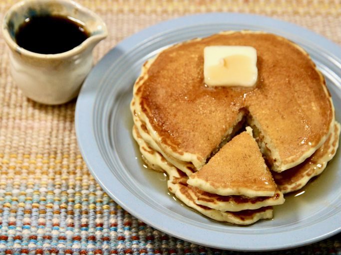

French Toast Pancakes

Description
French toast pancakes are a family favorite as we can never decide on French toast or pancakes! Great for any holiday breakfasts to keep everyone happy.
Ingredients
- vegetable oil
- white sugar
- baking soda
- all-purpose flour
- milk
Steps
- Heat 2 teaspoons oil in a griddle or skillet over medium-high heat.
- Whisk flour, sugar, baking powder, baking soda, salt, nutmeg, and cinnamon together in a bowl; make a well in the center. Beat milk, egg, 2 tablespoons oil, and vanilla extract together in a separate bowl
- Drop about 1/4 cup batter per pancake onto the griddle and cook until bubbles form and the edges are dry, 3 to 4 minutes.